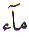
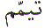

The Arabic Letter
Ta ( ) is positioned 3rd in the normal
Arabic character set. In the numerical character set, Abjad, Ta
(
) is positioned 3rd in the normal
Arabic character set. In the numerical character set, Abjad, Ta
( ) has the value of 400 and it is
the 22nd Letter. This article is about the spiritual meaning of
the Letter Ta (
) has the value of 400 and it is
the 22nd Letter. This article is about the spiritual meaning of
the Letter Ta ( ).
).
The Letter Ta ( ) has a value of 400. Which is effectively
4. It is the 22nd Letter in the Abjad format. That again reduces
to 4. There are 4 directions - East, West, North and South. And
there are also 4 general Elements - Earth, Air, Water and Fire.
As already stated in the article on the Letter Ba (
) has a value of 400. Which is effectively
4. It is the 22nd Letter in the Abjad format. That again reduces
to 4. There are 4 directions - East, West, North and South. And
there are also 4 general Elements - Earth, Air, Water and Fire.
As already stated in the article on the Letter Ba ( ),
the composition of the human being is from these 4 elements. But
the major
),
the composition of the human being is from these 4 elements. But
the major
part of the human body is composed of Earth and Water which is
visible. Only a minor part of the human body is created from fire
and air.
In the above reference we are told "It is He Who created you from dust..." And dust in Arabic is Turab.
Turab- Dust is one of the major components of the human body. As already stated, the other major component of the human body is Maa - Water. Now, when it comes to cleaning our bodies, we use Water. If water is not available how do we clean ourselves ?
It would be rather 'difficult'
to wash our bodies with air and especially fire. Therefore Allah
has given us the two other choices. Water is preferable for washing.
But if water is not available, or on the other hand if using water
will cause a problem due to illness, then we must use dust or
sand and this latter cleansing is Taiyammum. Why is water preferable ? Maa is Meem ( ) and Alif (
) and Alif ( ). The
word Maa starts with the Letter Meem (
). The
word Maa starts with the Letter Meem ( ).
).
Since we are looking
at the Letter Meem ( ) and the Letter
Ta (
) and the Letter
Ta ( ), therefore, if we look
at the first reference again Chapter 40 Verse 67 we are told,and afterward that you become old
though some among you die before and that you reach an appointed
term, in order that you may understand.
), therefore, if we look
at the first reference again Chapter 40 Verse 67 we are told,and afterward that you become old
though some among you die before and that you reach an appointed
term, in order that you may understand.
Death in Arabic is Mawt. No one knows when he or she will die. Therefore we must be prepared for it. How ? By repenting.
Tawba - Repentance is
an act of sorrow for a sin. In Islam, Tawba
Repentance is asking Allah for
forgiveness. Rasool Allah  said
"Every child is born with a true faith of Islam..."
said
"Every child is born with a true faith of Islam..."
Therefore, Tawba Repentance is the
turning back or returning of an individual towards Allah and the
Truth. If we look at the Arabic word Tawba
, it starts with the Letter Ta
( ) and ends on the Letter
Ta (
) and ends on the Letter
Ta ( ). Now if we look at the
Quran we find:
). Now if we look at the
Quran we find:
If we turn towards Allah in Repentance Tawba we find that Allah, our Rabb (Lord) is Tawwab - Often Returning and He is Merciful.
And if we look at just one more example from the Quran:
In the above reference,
true repentance or unhampered return or acceptable return is the
word Mataba. Mataba
is the word Taba with a Ma or the Letter Meem ( )
prefixed to it.
)
prefixed to it.
If we Return in Repentance toward our Rabb. Our Rabb Turns toward us in Mercy. Allah is Very Forgiving. But that does not mean we take advantage of Allah's forgiving nature. As it was stated at the end of the previous section, none of us knows when we will die. Therefore, we must not die in a state of sin, but in a state of Tawba Repentance. May Allah have Mercy on us all and take our souls when we are in a state of Repentance - Ameen.
| BACK |